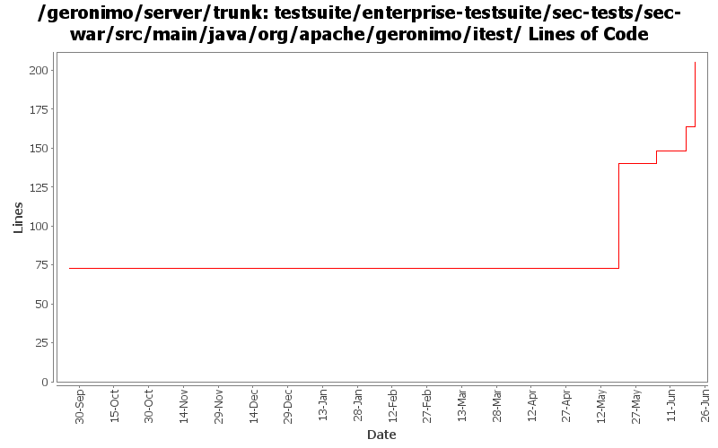

[root]/testsuite/enterprise-testsuite/sec-tests/sec-war/src/main/java/org/apache/geronimo/itest

| Author | Changes | Lines of Code | Lines per Change |
|---|---|---|---|
| Totals | 10 (100.0%) | 203 (100.0%) | 20.3 |
| djencks | 8 (80.0%) | 203 (100.0%) | 25.3 |
| gawor | 2 (20.0%) | 0 (0.0%) | 0.0 |
GERONIMO-4124 more run-as tests. Not clear results are correct, but they agree on jetty and tomcat
105 lines of code changed in 3 files:
GERONIMO-4119 Test that role-ref work after calling an ejb. Also actually use the injection test servlet
23 lines of code changed in 2 files:
add some role-ref tests to sec-tests
8 lines of code changed in 2 files:
GERONIMO-4034 example of app client to openejb security
67 lines of code changed in 1 file:
changing the order of gbeans fixes the test
0 lines of code changed in 2 files: